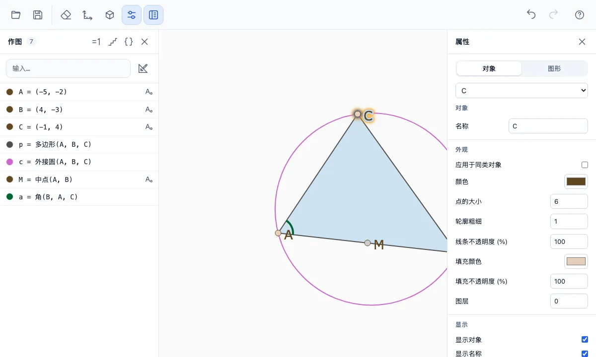
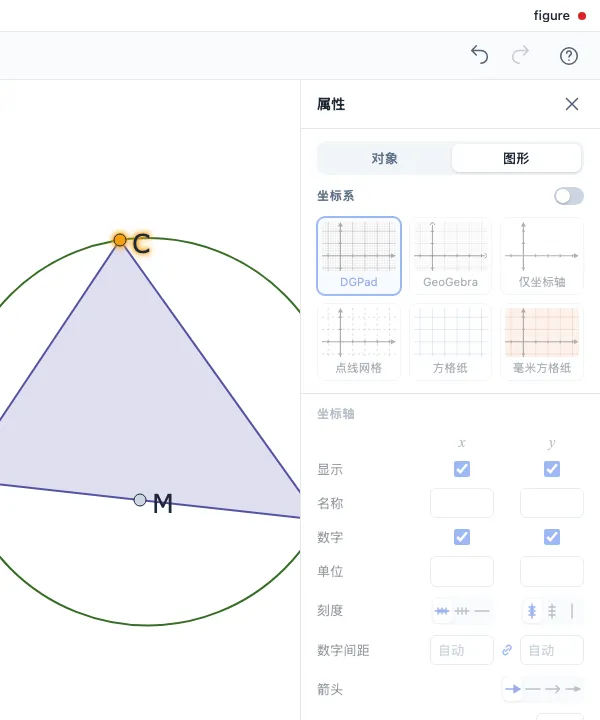

属性与坐标系

面板
- 通过 或上下文区的打开；通过其 ✕、同一个按钮或Esc 关闭。
- 右键单击可随时打开其所指内容的面板：对象、其名称或其行；若对象属于当前选择，则为整个选择；在空白处或坐标轴上则为图形选项卡。手中的工具保留其参数；如果面板占了工具面板的位置，关闭面板（例如按Esc）会恢复工具面板，工具仍在手中。唯一的例外：定义宏时，右键单击不起作用。
- 它与工具面板占据同一位置：打开其中一个会关闭另一个。
- 两个选项卡：对象和图形。
- 要设置的对象可以在图形中、通过其行，或在“选择对象…”列表（包括隐藏对象）中选择。在图形中单击只选择而不作图；按钮和复选框被选中而不会被触发。工具面板中的工具或输入行照常作图，新建的对象显示在面板中。选中多边形的边或顶点时，显示该多边形的设置。
- 修改立即生效，并可撤销。
- 数值输入框：水平拖动可调整数值（Shift：精细十倍），单击可直接输入。一次拖动算作一个撤销步骤。
- 颜色旁的 ↺ 按钮将其恢复为工具的默认颜色。
“对象”选项卡
| 部分 | 设置 |
|---|---|
| 对象 | 名称；命令和表达式还有定义 |
| 程序 | 点或表达式的：其海龟和事件程序，以积木显示 |
| 外观 | 应用于同类对象、颜色、点的大小、粗细、轮廓、线条和填充的不透明度、填充颜色、虚线、图层（绘制顺序） |
| 显示 |
显示对象、显示名称、固定对象（多边形）、惰性对象、文字大小、数值的小数位数（或不显示；文本中为其
%公式% 值的小数位数）、可见条件、输入框宽度
|
| 点 | 形状（圆、正方形、叉、菱形）、名称位置（度）、踪迹、固定在屏幕上、水平和垂直步长（跳跃式移动） |
| 线段 | 标记（表示等长的短线） |
| 角 | 弧的半径、直角标记（开口直角、弧、正方形、点、直角尺） |
| 轨迹、列表 | 点数；线段粗细 |
| 滑动条 | 增量、长度、垂直、滑块颜色和大小 |
| 边框 | 图像的：颜色、粗细（0：无边框）、线条不透明度、虚线；其不透明度和图层仍在外观中 |
| 动画 | 速度（0：停止）、反向、到达端点时：重新开始、往返或停止 |
可见条件
在显示部分：表达式的名称、公式（m == 2）或留空。只有条件为真时对象才可见，条件不能依赖于对象本身。
复选框的行列出以它为条件的对象：添加名称会把该对象与复选框相连，移除名称会使其始终可见。删除复选框会保留这些对象，并使其始终可见。
创建时的颜色
新建对象采用其类型的颜色：自由点和对象上的点为橙色，构造出的点为灰色，线段为红色，直线为蓝色，圆为绿色，多边形以靛蓝填充…新图形的背景为白色。
多个对象
多选时只显示所有对象共有的设置；各对象取值不同的项以灰色斜体显示。Ctrl-点击、Shift-点击或长按（在图形或“作图”面板中）可添加或移除一个对象。
惰性对象
惰性对象：对象不再响应鼠标悬停、点击或触摸，在图形中既不能拖动也不能选取，指针会作用于其下方的对象。属性面板打开时没有任何对象是惰性的，以便选中它并取消勾选。
“图形”选项卡

单击坐标轴即可打开此选项卡。
| 部分 | 设置 |
|---|---|
| 坐标系 | 是否显示；DGPad、GeoGebra、仅坐标轴、点线网格、方格纸、毫米方格纸样式（只影响外观，不影响缩放和背景） |
| 坐标轴（x 和 y） | 显示、名称、数字、单位（π：π/2 的倍数）、刻度、数字间距（留空：auto；🔗 使 x 和 y 相同）、箭头、颜色、数字大小和加粗、DGPad 或 GeoGebra 样式、正半轴 |
| 网格 | 是否显示、线间距、细分、颜色（默认与坐标轴相同）、粗细、实线、点线或虚线 |
| 缩放与平移 | 坐标轴固定在屏幕上、以原点为中心缩放 |
| 图形 | 背景；图案：从磁盘选择的图片，画在整个图形之后（↺将其移除），可选布局：平铺、水平或垂直平铺、居中、拉伸、填充、适应；角度用度（默认）或弧度；线段位于多边形之上 |
锁定视图（“图形”部分）：视图不再能用鼠标或手指平移、缩放或旋转。
有多个视图时，该选项卡设置当前视图：它的坐标系、坐标轴、网格、锁定、背景和图案都是自己的。
3D 中
| 部分 | 设置 |
|---|---|
| 坐标轴 | 显示三面角、颜色、粗细 |
| 地面 | 显示、颜色（↺：上方蓝色，下方棕色）、不透明度、大小、间距、线条颜色和粗细 |
| 视图 | 透视 |
这些设置可以撤销；视图的缩放、平移和旋转则不能。